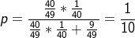

利用rand7()构造rand10()及其一些推广
本文最后更新于：2022年3月23日 晚上
今天看到一个群里有人说自己面试的题目，是利用 rand5() 来生成 rand3() ，刚看到我还懵了一下，真不会唉，而且涉及概率还是有点让人瑟瑟发抖的……
然后我还是花时间 Google 了一下，网上很多类似的 randA() 生成 randB() 的，大概是说利用 rand7() 构造 rand10() 是头条的一个面试题。然后我就学习了一下。
利用 rand7() 构造 rand10()
思路分析
其中一个解法是这样的：
只要能构造10的倍数的随机数，就可用通过对10取余得到 rand10() 。
rand7()可以生成随机的{1, 2, 3, 4, 5, 6, 7}；rand7() - 1可以生成随机的{0, 1, 2, 3, 4, 5, 6}；(rand7() - 1) * 7可以生成随机的{0, 7, 14, 21, 28, 35, 42}；(rand7() - 1) * 7 + rand7()可以生成随机的{0, 7, 14, 21, 28, 35, 42} + {1, 2, 3, 4, 5, 6, 7}，也就是 1 ~ 49 的随机数；上一步中取到的 1 ~ 49 的随机数，我们只需要取其中 1 ~ 40 的部分对10求余再加1即可得到 1 ~ 10 的随机数，即
rand10()。特别需要注意的是，这里并不是单纯的舍去了 41 ~ 49 的随机数，其概率计算看下图。假设这里取到的是 1 ~ 48 的随机数，直接舍去 41 ~ 48 的话最终取到的每个数的概率并不是1/10，而是1/9。
分析上一步：取 1 ~ 40 的随机数
x对10求余，x % 10可以得到随机的{0, 1, 2, 3, 4, 5, 6, 7, 8, 9}，所以还需要+1最终得到rand10()。
代码
int rand10() {
int x;
do {
x = (rand7()-1) * 7 + rand7();
}while(x > 40);
return x % 10 + 1;
}推广
- 利用 randA() 构造 randA*A()：对于任意的
randA()都可以通过类似rand7()的前四步，获取到randA*A()，即1 ~ A*A的随机数。 - 可以利用 n*K - 1 的随机数构造 randK()：概率计算公式同上。例如
49 = 5*10 - 1的随机数rand49()，就可以构造rand10()。刚好，利用rand5()来生成rand3()就是满足这一条件的，所以只需要取rand5()生成的 1 ~ 3 的随机数即可（已经是 1 ~ 3 的随机数，不需要对3求余再加1）。
本站所有文章除特别声明外，均采用 CC BY-SA 4.0 协议 ，转载请注明出处！